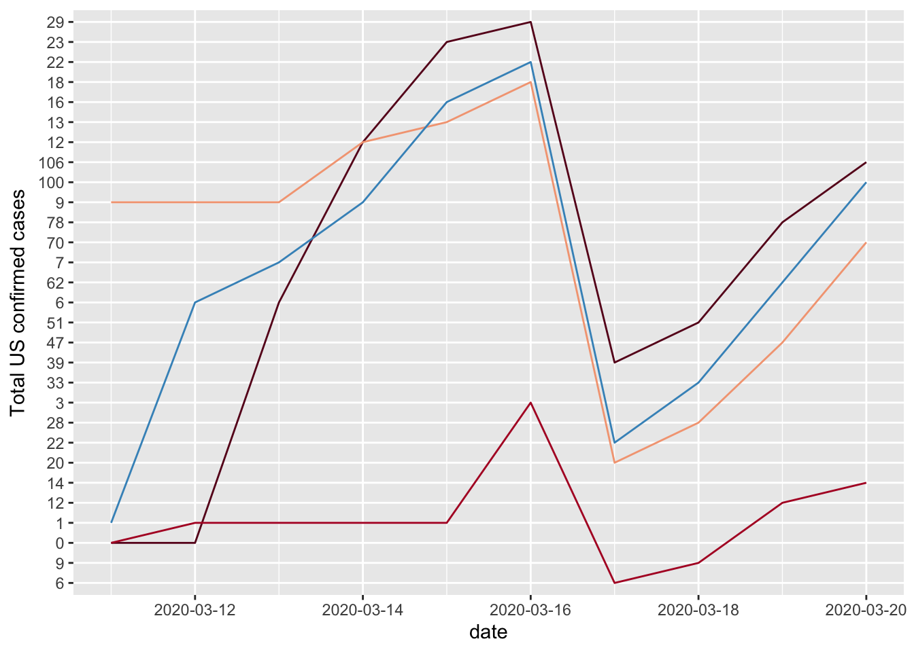

PM566 Final Project
Ruowen Wang
Introduction:
Question: I am trying to find the association between the social distance index with the incidence rate of COVID-19. To check whether keeping social distance is an effective way to slow down the spread of COVID-19.
Explanation: The social distance index is an integer from 0~100 that represents the extent residents and visitors are practicing social distancing. “0” indicates no social distancing is observed in the community, while “100” indicates all residents are staying at home and no visitors are entering the county.Calculated by MTI.
See the website for details of the social distance index’s calculation. https://data.covid.umd.edu/methods/index.html
Methods:
Data source: Social distance index: https://dataverse.harvard.edu/dataset.xhtml?persistentId=doi:10.7910/DVN/ZAKKCE Total US confirmed cases: https://dataverse.harvard.edu/dataset.xhtml?persistentId=doi:10.7910/DVN/HIDLTK
Firstly, I check the number of columns and rows of both data sets. Then I delete the extra columns and rows, focus on the same period.
Preliminary Results:
Please see Step 4.
Code:
Step1
- Read in data.
Step2
- Check the dimensions, headers, footers, and the trend of the social distance.
- For the sake of presentation friendliness, we only show 8 lines for the first and last part of the data.
- For the trends plot, I only show the four states for 50 days. They have very similar fluctuating trends in social distancing.
- There are 51 rows and 275 columns in the social distance index data set.
- The date is updated from Jan/01/2020 to Sep/28/2020.

- For the sake of presentation friendliness, I only show 15 lines for the first and the last part.
- For the total US confirmed cases, I only show the same four states above for 10 days. We also can see the same trend in these four countries, but Alaska have little confirmed case.
- There are 51 rows and 272 columns in the total US confirmed cases data set.
- The date is updated from Jan/21/2020 to Oct/06/2020.
Step3
- Delete the extra columns. I want to see the data of the same period in both data set. So I keep the period from Jan/21/2020 to Sep/28/2020.

Step4
Get the statistic of the social distance index (Jan/21/2020 ~ Sep/28/2020).
The kable format table contains the mean information of the first 6 states:“Alabama”, “Alaska”, “Arizona”, “Arkansas”, “California”, “Colorado”.
| statistic information | Alabama | Alaska | Arizona | Arkansas | California | Colorado |
|---|---|---|---|---|---|---|
| mean | 26.83 | 20.82 | 33.46 | 25.37 | 38.9 | 31.32 |
- We can see the range of social distance doesn’t fluctuate much in these states.
Step5
- Check the missing values in both data set.
## [1] 0## [1] 0- It shows that there is no any missing values in both data set.
Step6
- Draw the barchart of total US confirmed cases on Sep/28/2020.
Step7
- Find which states have the total confirmed cases on Sep/28/2020 which are over 200,000.

Step8
- Compare the social distance index with the total confirmed cases in the states which are over 200,000.

- From the following biaxial chart, in the 9 states with more than 200,000 confirmed infected people. If we set the social distance lager than 35 as the long social distance Here are 4 states follow patterns are shown: those with fewer infected people have a longer social distance, such as New York and New Jersey; the number of infected people is higher in states with shorter social distance, such as California, Florida and Texas.
Step9
- Plot the mean values of social distance index of the 9 states on the map.
- The states in grey color are those who have total confirmed cases lower than 200,000, which I did not calculate the mean values.
- The states in blue color are those who have total confirmed cases over than 200,000, which I have calculated the mean values before. The dark blue indicates the higher mean of social distance index, the light blue indicates the lower mean of social distance index.
Step10
- Find whether the variable of total confirmed cases and the variable of mean social distance are related.
##
## Pearson's product-moment correlation
##
## data: meandisz and totalz
## t = -0.68561, df = 49, p-value = 0.4962
## alternative hypothesis: true correlation is not equal to 0
## 95 percent confidence interval:
## -0.3633023 0.1830221
## sample estimates:
## cor
## -0.09747817- The correlation coefficient is -0.097 which is very close to 0, the p-value is 0.4962 which means it is not statistically significant, so we can find that these two variables are not related, the association between these two variables is not significant either.
Conclusions:
- Social distance is not an absolute influence on the number of people diagnosed.
- The range of social distance doesn’t fluctuate much in these states.
- The total confirmed cases and the mean social distance are not related. The association between these two variables is not statistically significant. The reason may be due to the accuracy of the measurement of the social distance index. Although they use many different data sources and the calculation after multi-level weighting, they still can’t guarantee the accuracy of the estimated index.
- Although this conclusion is surprising me, I think we still need to focus on keeping social distance, because New York and New Jersey are two states have high population density, but with quite low confirmed cases numbers, we can also see that the social distance indexes of these two states are the highest two numbers in the plot. Maybe keeping a social distance is more efficient in big cities than in rural areas. Therefore, as the states with the same high population density, California and Texas should keep social distance and see if that can slow down the spread of Covid-19.